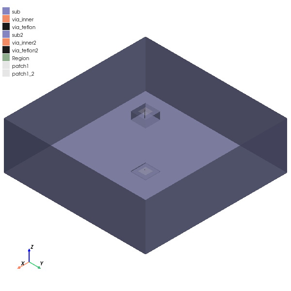

Download this example
Download this example as a Jupyter Notebook or as a Python script.
3D component creation and reuse#
Here is a workflow for creating a 3D component and reusing it:
Step 1: Create an antenna using PyAEDT and HFSS 3D Modeler. (The antenna can also be created using EDB and HFSS 3D Layout).
Step 2. Store the object as a 3D component on the disk.
Step 3. Reuse the 3D component in another project.
Step 4. Parametrize and optimize the target design.
Keywords: AEDT, General, 3D component.
Perform imports and define constants#
Import the required packages.
[1]:
import os
import tempfile
import time
[2]:
from ansys.aedt.core import Hfss
Define constants.
[3]:
AEDT_VERSION = "2024.2"
NG_MODE = False # Open AEDT UI when it is launched.
Create temporary directory#
Create a temporary directory where downloaded data or dumped data can be stored. If you’d like to retrieve the project data for subsequent use, the temporary folder name is given by temp_folder.name.
[4]:
temp_folder = tempfile.TemporaryDirectory(suffix=".ansys")
Create an HFSS object.
[5]:
hfss = Hfss(
version=AEDT_VERSION,
new_desktop=True,
close_on_exit=True,
non_graphical=NG_MODE,
solution_type="Modal",
)
hfss.save_project(os.path.join(temp_folder.name, "example.aedt"))
PyAEDT INFO: Python version 3.10.11 (tags/v3.10.11:7d4cc5a, Apr 5 2023, 00:38:17) [MSC v.1929 64 bit (AMD64)]
PyAEDT INFO: PyAEDT version 0.12.dev0.
PyAEDT INFO: Initializing new Desktop session.
PyAEDT INFO: Log on console is enabled.
PyAEDT INFO: Log on file C:\Users\ansys\AppData\Local\Temp\pyaedt_ansys_a8f1a3d0-8eb9-4bbc-bcaa-d2d7089fb536.log is enabled.
PyAEDT INFO: Log on AEDT is enabled.
PyAEDT INFO: Debug logger is disabled. PyAEDT methods will not be logged.
PyAEDT INFO: Launching PyAEDT with gRPC plugin.
PyAEDT INFO: New AEDT session is starting on gRPC port 65073
PyAEDT INFO: AEDT installation Path C:\Program Files\AnsysEM\v242\Win64
PyAEDT INFO: Ansoft.ElectronicsDesktop.2024.2 version started with process ID 6500.
PyAEDT INFO: Project Project1 has been created.
PyAEDT INFO: No design is present. Inserting a new design.
PyAEDT INFO: Added design 'HFSS_NTF' of type HFSS.
PyAEDT INFO: Aedt Objects correctly read
PyAEDT INFO: Project example Saved correctly
[5]:
True
Define variables#
PyAEDT can create and store all variables available in AEDT (such as design, project, and postprocessing).
[6]:
hfss["thick"] = "0.1mm"
hfss["width"] = "1mm"
Create modeler objects#
PyAEDT supports all modeler functionalities available in AEDT. You can create, delete, and modify objects using all available Boolean operations. PyAEDT can also fully access history.
[7]:
substrate = hfss.modeler.create_box(
["-width", "-width", "-thick"],
["2*width", "2*width", "thick"],
material="FR4_epoxy",
name="sub",
)
patch = hfss.modeler.create_rectangle(
"XY", ["-width/2", "-width/2", "0mm"], ["width", "width"], name="patch1"
)
via1 = hfss.modeler.create_cylinder(
2,
["-width/8", "-width/4", "-thick"],
"0.01mm",
"thick",
material="copper",
name="via_inner",
)
via_outer = hfss.modeler.create_cylinder(
2,
["-width/8", "-width/4", "-thick"],
"0.025mm",
"thick",
material="Teflon_based",
name="via_teflon",
)
PyAEDT INFO: Modeler class has been initialized! Elapsed time: 0m 1sec
PyAEDT INFO: Materials class has been initialized! Elapsed time: 0m 0sec
Assign bundaries#
Most of HFSS boundaries and excitations are already available in PyAEDT. You can easily assign a boundary to a face or to an object by taking advantage of Object-Oriented Programming (OOP) available in PyAEDT.
Assign Perfect E boundary to sheets#
Assign a Perfect E boundary to sheets.
[8]:
hfss.assign_perfecte_to_sheets(patch)
PyAEDT INFO: Boundary Perfect E PerfE_URLX2T has been correctly created.
[8]:
<ansys.aedt.core.modules.boundary.BoundaryObject at 0x1cf3f23f160>
Assign boundaries to faces#
Assign boundaries to the top and bottom faces of an object.
[9]:
side_face = [
i
for i in via_outer.faces
if i.id not in [via_outer.top_face_z.id, via_outer.bottom_face_z.id]
]
hfss.assign_perfecte_to_sheets(side_face)
hfss.assign_perfecte_to_sheets(substrate.bottom_face_z)
PyAEDT INFO: Boundary Perfect E PerfE_DXMLBY has been correctly created.
PyAEDT INFO: Boundary Perfect E PerfE_CQGIB9 has been correctly created.
[9]:
<ansys.aedt.core.modules.boundary.BoundaryObject at 0x1cf3f23ece0>
Create wave port#
You can assign a wave port to a sheet or to a face of an object.
[10]:
hfss.wave_port(
via_outer.bottom_face_z,
name="P1",
)
PyAEDT INFO: Boundary Wave Port P1 has been correctly created.
[10]:
<ansys.aedt.core.modules.boundary.BoundaryObject at 0x1cf3f23e830>
Create 3D component#
Once the model is ready, you can create a 3D component. Multiple options are available to partially select objects, coordinate systems, boundaries, and mesh operations. You can also create encrypted 3D components.
[11]:
component_path = os.path.join(temp_folder.name, "component_test.aedbcomp")
hfss.modeler.create_3dcomponent(component_path, "patch_antenna")
PyAEDT INFO: Mesh class has been initialized! Elapsed time: 0m 0sec
PyAEDT INFO: Mesh class has been initialized! Elapsed time: 0m 0sec
[11]:
True
Manage multiple project#
PyAEDT lets you control multiple projects, designs, and solution types at the same time.
[12]:
new_project = os.path.join(temp_folder.name, "new_project.aedt")
hfss2 = Hfss(
version=AEDT_VERSION,
project=new_project,
design="new_design",
solution_type="Modal",
)
PyAEDT INFO: Python version 3.10.11 (tags/v3.10.11:7d4cc5a, Apr 5 2023, 00:38:17) [MSC v.1929 64 bit (AMD64)]
PyAEDT INFO: PyAEDT version 0.12.dev0.
PyAEDT INFO: Returning found Desktop session with PID 6500!
PyAEDT INFO: Project new_project has been created.
PyAEDT INFO: Added design 'new_design' of type HFSS.
PyAEDT INFO: Aedt Objects correctly read
Insert 3D component#
You can insert a 3D component without supplying additional information. All needed information is read from the file itself.
[13]:
hfss2.modeler.insert_3d_component(component_path)
PyAEDT INFO: Modeler class has been initialized! Elapsed time: 0m 0sec
PyAEDT INFO: Parsing C:/Users/ansys/AppData/Local/Temp/tmpha4_pyvo.ansys/new_project.aedt.
PyAEDT INFO: File C:/Users/ansys/AppData/Local/Temp/tmpha4_pyvo.ansys/new_project.aedt correctly loaded. Elapsed time: 0m 0sec
PyAEDT INFO: aedt file load time 0.0
[13]:
<ansys.aedt.core.modeler.cad.components_3d.UserDefinedComponent at 0x1cf428c2e30>
Parametrize 3D components#
You can specify parameters for any 3D components.
[14]:
hfss2.modeler.user_defined_components["patch_antenna1"].parameters
hfss2["p_thick"] = "1mm"
hfss2.modeler.user_defined_components["patch_antenna1"].parameters["thick"] = "p_thick"
Insert multiple 3D components#
There is no limit to the number of 3D components that can be inserted in a design. These components can be the same or linked to different files.
[15]:
hfss2.modeler.create_coordinate_system(origin=[20, 20, 10], name="Second_antenna")
ant2 = hfss2.modeler.insert_3d_component(
component_path, coordinate_system="Second_antenna"
)
Move 3D components#
Move a 3D component by either changing its position or moving the relative coordinate system.
[16]:
hfss2.modeler.coordinate_systems[0].origin = [10, 10, 3]
Create air region#
Create an air region and assign a boundary to a face or an object.
[17]:
hfss2.modeler.create_air_region(30, 30, 30, 30, 30, 30)
hfss2.assign_radiation_boundary_to_faces(hfss2.modeler["Region"].faces)
PyAEDT INFO: Boundary Radiation Rad__JWLALM has been correctly created.
[17]:
<ansys.aedt.core.modules.boundary.BoundaryObject at 0x1cf428c3dc0>
Create setup and optimetrics analysis#
Once a project is ready to be solved, use PyAEDT to create a setup and parametrics analysis. All setup parameters can be edited.
[18]:
setup1 = hfss2.create_setup()
optim = hfss2.parametrics.add("p_thick", "0.2mm", "1.5mm", step=14)
Plot objects#
[19]:
hfss2.modeler.fit_all()
hfss2.plot(
show=False,
output_file=os.path.join(hfss.working_directory, "Image.jpg"),
plot_air_objects=True,
)
PyAEDT INFO: PostProcessor class has been initialized! Elapsed time: 0m 0sec
PyAEDT INFO: Post class has been initialized! Elapsed time: 0m 0sec
C:\actions-runner\_work\pyaedt-examples\pyaedt-examples\.venv\lib\site-packages\pyvista\jupyter\notebook.py:37: UserWarning: Failed to use notebook backend:
No module named 'trame'
Falling back to a static output.
warnings.warn(

[19]:
<ansys.aedt.core.visualization.plot.pyvista.ModelPlotter at 0x1cf46d98970>
Release AEDT#
[20]:
hfss2.save_project()
hfss2.release_desktop()
# Wait 3 seconds to allow AEDT to shut down before cleaning the temporary directory.
time.sleep(3)
PyAEDT INFO: Project new_project Saved correctly
PyAEDT INFO: Desktop has been released and closed.
Clean up#
All project files are saved in the folder temp_folder.name. If you’ve run this example as a Jupyter notebook, you can retrieve those project files. The following cell removes all temporary files, including the project folder.
[21]:
temp_folder.cleanup()
Download this example
Download this example as a Jupyter Notebook or as a Python script.